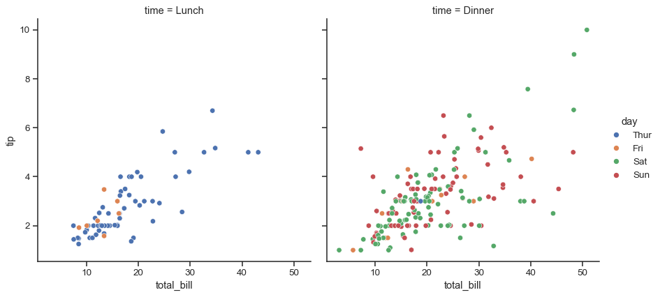
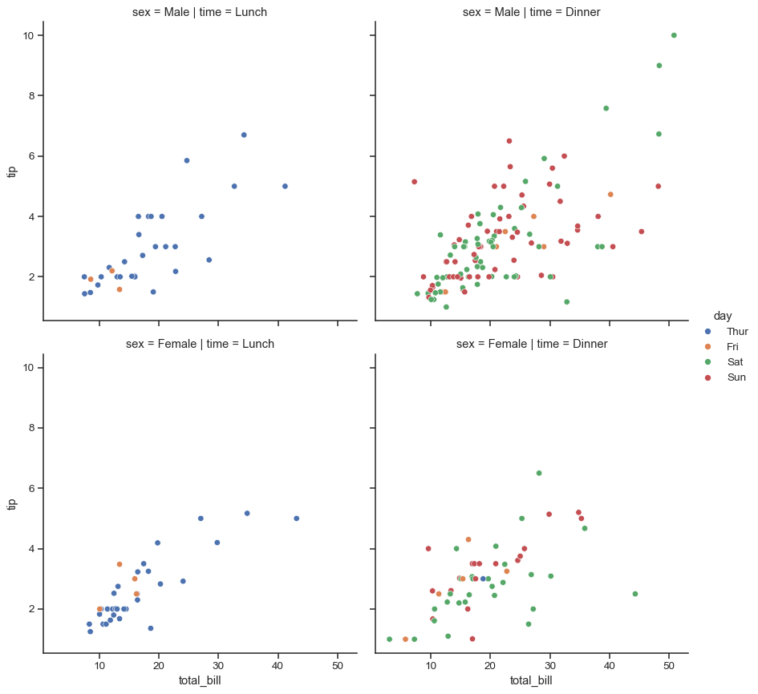
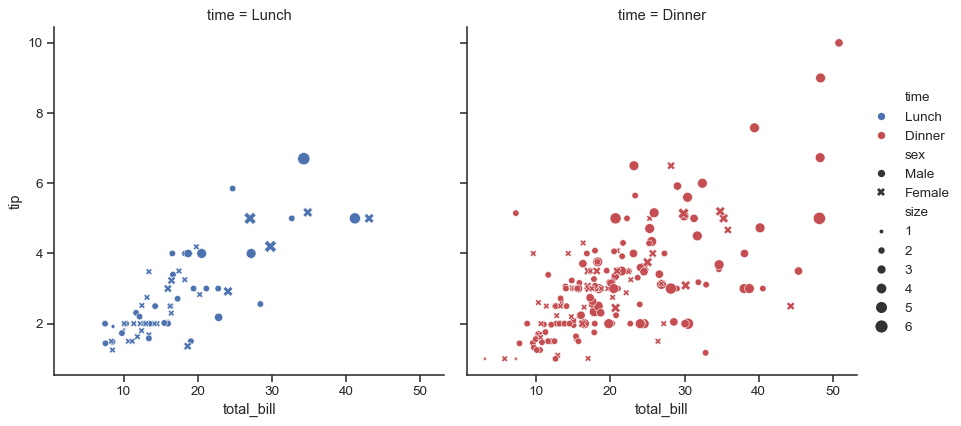
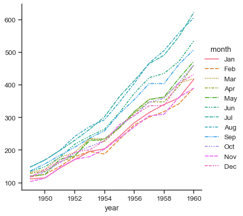

seaborn.relplot#
- seaborn.relplot(data=None, *, x=None, y=None, hue=None, size=None, style=None, units=None, row=None, col=None, col_wrap=None, row_order=None, col_order=None, palette=None, hue_order=None, hue_norm=None, sizes=None, size_order=None, size_norm=None, markers=None, dashes=None, style_order=None, legend='auto', kind='scatter', height=5, aspect=1, facet_kws=None, **kwargs)#
Figure-level interface for drawing relational plots onto a FacetGrid.
This function provides access to several different axes-level functions that show the relationship between two variables with semantic mappings of subsets. The
kindparameter selects the underlying axes-level function to use:scatterplot()(withkind="scatter"; the default)lineplot()(withkind="line")
Extra keyword arguments are passed to the underlying function, so you should refer to the documentation for each to see kind-specific options.
The relationship between
xandycan be shown for different subsets of the data using thehue,size, andstyleparameters. These parameters control what visual semantics are used to identify the different subsets. It is possible to show up to three dimensions independently by using all three semantic types, but this style of plot can be hard to interpret and is often ineffective. Using redundant semantics (i.e. bothhueandstylefor the same variable) can be helpful for making graphics more accessible.See the tutorial for more information.
The default treatment of the
hue(and to a lesser extent,size) semantic, if present, depends on whether the variable is inferred to represent “numeric” or “categorical” data. In particular, numeric variables are represented with a sequential colormap by default, and the legend entries show regular “ticks” with values that may or may not exist in the data. This behavior can be controlled through various parameters, as described and illustrated below.After plotting, the
FacetGridwith the plot is returned and can be used directly to tweak supporting plot details or add other layers.- Parameters:
- data
pandas.DataFrame,numpy.ndarray, mapping, or sequence Input data structure. Either a long-form collection of vectors that can be assigned to named variables or a wide-form dataset that will be internally reshaped.
- x, yvectors or keys in
data Variables that specify positions on the x and y axes.
- huevector or key in
data Grouping variable that will produce elements with different colors. Can be either categorical or numeric, although color mapping will behave differently in latter case.
- sizevector or key in
data Grouping variable that will produce elements with different sizes. Can be either categorical or numeric, although size mapping will behave differently in latter case.
- stylevector or key in
data Grouping variable that will produce elements with different styles. Can have a numeric dtype but will always be treated as categorical.
- unitsvector or key in
data Grouping variable identifying sampling units. When used, a separate line will be drawn for each unit with appropriate semantics, but no legend entry will be added. Useful for showing distribution of experimental replicates when exact identities are not needed.
- row, colvectors or keys in
data Variables that define subsets to plot on different facets.
- col_wrapint
“Wrap” the column variable at this width, so that the column facets span multiple rows. Incompatible with a
rowfacet.- row_order, col_orderlists of strings
Order to organize the rows and/or columns of the grid in, otherwise the orders are inferred from the data objects.
- palettestring, list, dict, or
matplotlib.colors.Colormap Method for choosing the colors to use when mapping the
huesemantic. String values are passed tocolor_palette(). List or dict values imply categorical mapping, while a colormap object implies numeric mapping.- hue_ordervector of strings
Specify the order of processing and plotting for categorical levels of the
huesemantic.- hue_normtuple or
matplotlib.colors.Normalize Either a pair of values that set the normalization range in data units or an object that will map from data units into a [0, 1] interval. Usage implies numeric mapping.
- sizeslist, dict, or tuple
An object that determines how sizes are chosen when
sizeis used. List or dict arguments should provide a size for each unique data value, which forces a categorical interpretation. The argument may also be a min, max tuple.- size_orderlist
Specified order for appearance of the
sizevariable levels, otherwise they are determined from the data. Not relevant when thesizevariable is numeric.- size_normtuple or Normalize object
Normalization in data units for scaling plot objects when the
sizevariable is numeric.- style_orderlist
Specified order for appearance of the
stylevariable levels otherwise they are determined from the data. Not relevant when thestylevariable is numeric.- dashesboolean, list, or dictionary
Object determining how to draw the lines for different levels of the
stylevariable. Setting toTruewill use default dash codes, or you can pass a list of dash codes or a dictionary mapping levels of thestylevariable to dash codes. Setting toFalsewill use solid lines for all subsets. Dashes are specified as in matplotlib: a tuple of(segment, gap)lengths, or an empty string to draw a solid line.- markersboolean, list, or dictionary
Object determining how to draw the markers for different levels of the
stylevariable. Setting toTruewill use default markers, or you can pass a list of markers or a dictionary mapping levels of thestylevariable to markers. Setting toFalsewill draw marker-less lines. Markers are specified as in matplotlib.- legend“auto”, “brief”, “full”, or False
How to draw the legend. If “brief”, numeric
hueandsizevariables will be represented with a sample of evenly spaced values. If “full”, every group will get an entry in the legend. If “auto”, choose between brief or full representation based on number of levels. IfFalse, no legend data is added and no legend is drawn.- kindstring
Kind of plot to draw, corresponding to a seaborn relational plot. Options are
"scatter"or"line".- heightscalar
Height (in inches) of each facet. See also:
aspect.- aspectscalar
Aspect ratio of each facet, so that
aspect * heightgives the width of each facet in inches.- facet_kwsdict
Dictionary of other keyword arguments to pass to
FacetGrid.- kwargskey, value pairings
Other keyword arguments are passed through to the underlying plotting function.
- data
- Returns:
FacetGridAn object managing one or more subplots that correspond to conditional data subsets with convenient methods for batch-setting of axes attributes.
Examples
These examples will illustrate only some of the functionality that
relplot()is capable of. For more information, consult the examples forscatterplot()andlineplot(), which are used whenkind="scatter"orkind="line", respectively.To illustrate
kind="scatter"(the default style of plot), we will use the “tips” dataset:tips = sns.load_dataset("tips") tips.head()
total_bill tip sex smoker day time size 0 16.99 1.01 Female No Sun Dinner 2 1 10.34 1.66 Male No Sun Dinner 3 2 21.01 3.50 Male No Sun Dinner 3 3 23.68 3.31 Male No Sun Dinner 2 4 24.59 3.61 Female No Sun Dinner 4 Assigning
xandyand any semantic mapping variables will draw a single plot:sns.relplot(data=tips, x="total_bill", y="tip", hue="day")
Assigning a
colvariable creates a faceted figure with multiple subplots arranged across the columns of the grid:sns.relplot(data=tips, x="total_bill", y="tip", hue="day", col="time")
Different variables can be assigned to facet on both the columns and rows:
sns.relplot(data=tips, x="total_bill", y="tip", hue="day", col="time", row="sex")
When the variable assigned to
colhas many levels, it can be “wrapped” across multiple rows:sns.relplot(data=tips, x="total_bill", y="tip", hue="time", col="day", col_wrap=2)
Assigning multiple semantic variables can show multi-dimensional relationships, but be mindful to avoid making an overly-complicated plot.
sns.relplot( data=tips, x="total_bill", y="tip", col="time", hue="time", size="size", style="sex", palette=["b", "r"], sizes=(10, 100) )
When there is a natural continuity to one of the variables, it makes more sense to show lines instead of points. To draw the figure using
lineplot(), setkind="line". We will illustrate this effect with the “fmri dataset:fmri = sns.load_dataset("fmri") fmri.head()
subject timepoint event region signal 0 s13 18 stim parietal -0.017552 1 s5 14 stim parietal -0.080883 2 s12 18 stim parietal -0.081033 3 s11 18 stim parietal -0.046134 4 s10 18 stim parietal -0.037970 Using
kind="line"offers the same flexibility for semantic mappings askind="scatter", butlineplot()transforms the data more before plotting. Observations are sorted by theirxvalue, and repeated observations are aggregated. By default, the resulting plot shows the mean and 95% CI for each unitsns.relplot( data=fmri, x="timepoint", y="signal", col="region", hue="event", style="event", kind="line", )
The size and shape of the figure is parametrized by the
heightandaspectratio of each individual facet:sns.relplot( data=fmri, x="timepoint", y="signal", hue="event", style="event", col="region", height=4, aspect=.7, kind="line" )
The object returned by
relplot()is always aFacetGrid, which has several methods that allow you to quickly tweak the title, labels, and other aspects of the plot:g = sns.relplot( data=fmri, x="timepoint", y="signal", hue="event", style="event", col="region", height=4, aspect=.7, kind="line" ) (g.map(plt.axhline, y=0, color=".7", dashes=(2, 1), zorder=0) .set_axis_labels("Timepoint", "Percent signal change") .set_titles("Region: {col_name} cortex") .tight_layout(w_pad=0))
It is also possible to use wide-form data with
relplot():flights_wide = sns.load_dataset("flights").pivot("year", "month", "passengers")
Faceting is not an option in this case, but the plot will still take advantage of the external legend offered by
FacetGrid:sns.relplot(data=flights_wide, kind="line")